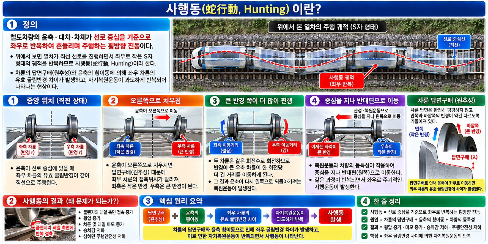

사행동(Hunting)은 철도차량의 윤축·대차·차체가 선로 중심을 기준으로 좌우로 반복하여 흔들리며 주행하는 횡방향 진동이다.
열차가 직선 선로를 주행해도 차륜의 형상(답면구배)으로 인해 좌우로 S자 궤적을 반복하며 발생한다.
영향: 횡압 증가, 레일·차륜 마모, 승차감 저하, 주행 안전성 저하
CONCEPT 02왜 사행동이 생기는가? — 발생 원리
윤축이 한쪽으로 치우치면 좌우 차륜의 레일 접촉 위치가 달라져 좌우 차륜의 유효 굴림반경 차이가 생긴다.
차축으로 연결된 좌우 차륜은 같은 회전수로 돌기 때문에, 반경이 큰 쪽이 더 긴 거리를 진행하고 윤축은 반대 방향으로 이동한다.
이 복원운동이 중심을 지나 반복되면서 사행동이 발생한다.
중앙에서는 좌우 굴림반경이 같아 직진
한쪽으로 치우치면 굴림반경 차이 발생
큰 반경 쪽이 더 많이 전진 → 윤축이 반대쪽으로 복원
복원운동이 중심을 지나 반대편으로 이동 → 반복

▲ VIS-130 — 사행동 발생원리 | PRIMARY VIS
CONCEPT 031축 사행동 — 기하학적 사행운동
1축 사행동은 하나의 윤축이 레일 위에서 좌우로 사인파형(뱀 모양) 궤적을 그리는 기하학적 사행운동이다.
핵심 수식 (파장 L):
L = 2π√(e·r / λ)
기호
의미
파장에 미치는 영향
e
좌우 차륜 간격의 1/2
클수록 파장 증가
r
차륜반경
클수록 파장 증가
λ
차륜 답면구배
클수록 파장 감소
⚠ 주의:1축 사행동 ≠ 1차 사행동 — 전혀 다른 개념이다.
CONCEPT 041차 사행동과 2차 사행동SOURCE 89
1차 사행동 (차체 사행동)
• 비교적 낮은 속도 영역에서 발생
• 속도 증가 시 감쇠되어 진동 줄어듦
• 차체 중심의 횡진동
2차 사행동 (대차 사행동)
• 임계속도 이상에서 중요
• 자려진동 — 감쇠되지 않고 증폭 가능
• 대차의 횡·요 운동